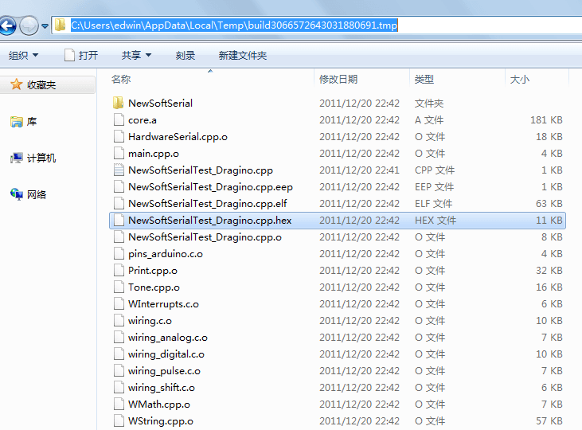
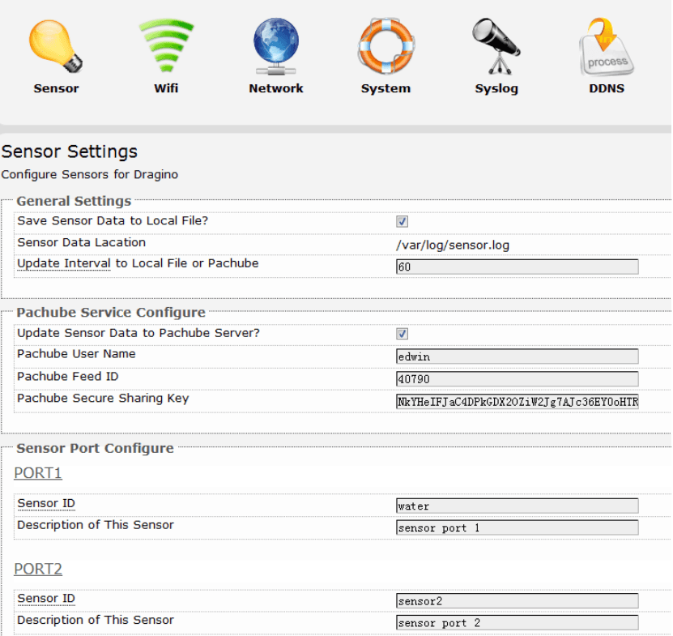

Dragrove is an open-source-based generic gateway for the Internet of Things. It combines a Dragino (Easy Internet Access, powerful CPU, Linux system), an Arduino-compatible daughter board (monitoring the physical world), and RF networks like XBee.
The base board Dragino MS12 is a WiFi/Linux-enabled appliance for MCU projects. The goal of the Dragino is to solve the connectivity problem and greatly enhance micro-controller products such as the Arduino.
The Arduino compatible daughter board for the Dragino was designed by SeeedStudio. With the rich interface it provides, developers can easily integrate or develop products with both advantages of the Dragino (Easy Internet Access, powerful CPU, Linux system) and the Arduino (monitoring the environment).
Model: WLS03261P
There are two known bugs in the Dragrove daughter board's design:
Here are the details of these two bugs and the suggested workarounds:
Users have observed that the system does not boot with the daughter board installed on Dragino.
Thanks to Tamir for pointing this out via his blog: http://tae09.blogspot.com/2012/04/dragrove-daughter-board.html
Summary of his investigation:
The Dragino does not boot while the Dragrove daughter board is plugged in.
This is because AR2317's reset pin (labelled COLD on the Router Connector) stays high and hence the AR2317 keeps resetting. If you look at the daughter board's schematic, you will observe that pin labelled "COLD" on the Router connector is connected to pin PD4 (via resistor) of the AVR micro-controller on the daughter board. Note that a 'Pull-down" resistor has not been connected to this signal and the AVR microcontroller might be keeping this pin to logic high by default and hence AR2317 keeps resetting non-stop.
The solution is to link a wire between COLD pin and Ground as shown in the image below:
This solution forces COLD to LOW, which then allows the board to boot.
You have to keep the COLD pin LOW to prevent Dragino from rebooting.
Once the Dragino boots, you can program the daughter board (as described in the wiki further below) to bring COLD to LOW at startup.
Once that is done, you can remove the jumper and reboot the Dragino without any problems.
Make sure that every Arduino sketch you upload later on to the daughter board sets the COLD pin to LOW at start up. Here is the code to do that:
//COLD_RST pin is PD4 i.e. Digital Pin 4 #define COLD_RST (4) ..... pinMode(COLD_RST, OUTPUT); digitalWrite(COLD_RST,LOW);
This manual is a tutorial for how to set up the platform and the program between Dragino and the Daughter board. In this manual we will provide following topics:
You need to configure your Dragrove the first time you use it to set up the WAN. The Base board Dragino has a default IP address of 192.168.255.1 via its LAN port. To access the Dragrove, you can simply Set your computer to DHCP and connect an Ethernet cable between your computer and Dragrove.
Dragrove will auto assign an IP address to your computer. Type 192.168.255.1 in your browser and you will see the Dragrove setup page.
The Dragrove Wifi interface works in AP Client mode by default. You can configure it to connect to your wifi router and get Internet access.
You can select the WAN (here it's WiFi) in DHCP mode or manual mode in the network menu. Here I would suggest to use the manual mode:
Now the Dragrove has a WAN IP of 192.168.1.108. Disconnect the Ethernet cable between your computer and Dragrove and connect your computer to the Internet as usual. Type 192.168.1.108 in your browser and you will see the Dragrove setup page. That's it - the Dragrove is connected to your WiFi network.
The Dragrove base board Dragino is based on the embedded Linux system OpenWrt. You can access it via SSH and customize the system for different applications. You can download Putty here. If you connect your computer to Dragrove with an Ethernet cable, you can log in Dragrove through the LAN port:
Also, you can use the WAN port (WiFi port) to log in:
The SSH access for Dragrove is:
IP: 192.168.255.1 on LAN port. If you want to connect to the Dragrove via WiFi, the IP should be 192.168.1.108.
Username: root
Password: root
The SSH access password can be changed with this command:
root@dragino-751aff:~#passwd Changing password for root New password: Retype password: Password for root changed by root
Notice: For security reason, it is recommended that you change the SSH password after your first log in.
For the Dragino, we are using avrdude to upload the program (.hex format) to the daughter board. You can use the Arduino IDE to generate the hex file. The Arduino IDE will generate the hex file in a temporary directory. In the Arduino IDE press the "Shift key" as you click the "compile" command button. The Arduino IDE will automatically generate the .hex file for you. NOTE that the .hex file will automatically be cleared when you close the Arduino sketch.
You can find this hex file in your USER_TEMP_LATEST_build_directoy. Below is an example.

To transfer this file to the daughter board, we can run a Windows TFTP server (tftpd32) and point the TFTP directory to where the hex file is and the IP of your server computer. You can download tftpd32 here
Select the daughter board .hex file path and select you server PC's IP address.
Now we need to set up Dragino so it will automatically get the hex file and program the daughter board.
In SSH access to Dragino, run:
root@dragino-751aff:~# wget http://svn.dragino.com/scripts/upgrade_avr.sh // get the upgrade_avr script from Dragino SVN server root@dragino-751aff:~#sh upgrade_avr.sh YOUR_HEX_FILE_NAME YOUR_TFTP_SERVER IP
The script will now transfer the file from your TFTP server and upload to the daughter board.
Note: You can modify the upgrade.avr.sh for different configurations.
This page is used to configure the Dragrove to update different sensor values to Pachube or to save in a local file.

Save Sensor Data to Local File:Enable/Disable local save.
Sensor Data Location:the location to store the sensor value.
Update Interval: How often to store the data value to local file or update to Pachube.
'Note: 'local save will be cleared after reboot. You can change the local file location in /etc/config/sensor manual or to other location if you want to keep the data after reboot.
Pachube (www.pachube.com) is a free, public server where you can upload and plot your sensor data.
You can configure Dragino to update the sensor value and upload it to your Pachube account.
Update Sensor Data to Pachube: Enable/disable update to Pachube service.
Pachube User Name:Input your Pachube User Name here.
Pachube Feed ID: Your Pachube ID.
You can find this in your Pachube URL:
For example, above feed has the ID: 40790
Pachube Secure Sharing Key: Input Your Secure Sharing Key or API key here.
Sensor Port Configure: Dragino offer 6 sensor ports to store data/sent data to Pachube. The sensor ID used for record/update to Pachube.
The baseboard Dragino runs a daemon that checks all data get from its UART interface and checks whether it matches this format: <sensor ID>VALUE[... ...]. if it matches, then the Dragino will store this value as the latest value of the sensor ID. It will store the data on a local location or upload to Pachube periodically and then clear the data buffer.
Examples of data format:
In (1), Dragino will store: sensor1=89, sensor2=133 and sensor3=67. In (2), Dragino will store: sensor1=100, sensor2=43, but no gas since gas is not a valid ID. Note: In the data format there should be one or more spaces between different sensor IDs.
The daughter board is used to send the sensor data to the Dragino via its UART interface.
An example sketch for the daughter board can be download from:
http://svn.dragino.com/examples/SerialToPachube/avr/
This demo code sends sensor data from the daughter board to the Dragino. After you upload this code to the daughter board and configure Pachube as described above, you should see your feed updated every minute. Below is a plot example.
Besides the UART interface, the Dragino also connects to the Daughter board via its SPI interface. We can use this interface to send commands and get feedback from the Arduino compatible Daughter board.
You can find the example code on the link below (For Arduino022):
http://svn.dragino.com/examples/Dragrove_SPI_Test/
avr/ is the code running the Daughter board and SPI_Test.lua is the code running in the Dragino.
AVR code include:
SPI/: SPI library, copy this to Arduino\libraries.
Buffer/: buffer library, copy this to Arduino\libraries.
NewSoftSerial/: software serial library, copy this to Arduino\libraries
Dragrove_SPI_TEST.h: use Arduino IDE Sketch. Add this file to the sketch.
Dragrove_SPI_TEST.pde: Sketch for the Dragrove.
Dragrove_SPI_TEST.cpp.hex: Compiled hex file.
You can also edit this Arduino sketch, adding your own case and commands and then compile your code to .hex file or just upload the .cpp.hex file to the daughter board. Upload the .hex file to Daughter board as above.
Then SSH to the Dragino, and run the SPI_Test.lun to send commands to the Dragrove:
root@dragino-751aff:~# lua SPI_Test.lua gb
The Dragino will send command “gb” (Get_Board_Info) to the daughter board via SPI interface, and the daughter board will send back the board info. The command gb is predefined in the daughter board. In the demo code there are two commands: gb: Get Board info. gd: Get data from the daughter board: the data will be sent via UART interface.
Notice:If SPI_Test.lua can not be found you need to put SPI_Test.lua at the root of the Dragino with SCP and use SCP to log in the Dragino. Put SPI_Test.lua at the root.
In the avr code running on the daughter board there is an interrupt code ISR(SPI_STC_vect). This will be called once there is a byte from the SPI interface. First it checks whether the byte is the end of the command message (“.”). If this it is not the end, then we add this to the Rx buffer. If it is the end, we set a flag that it is a new control message. The avr loop keeps checking the new message flag, so when this flag is set, it will run ctrlDecode to parse the command, which is stored in the Rx buffer.
You can define different commands in the switch/case condition code: for example control motor, get temperature etc. In this example, we only have a command “gb” which simply shows the pre-defined board information. You can easily add your own command here. For example, a "gn" command was added in the following code to turn on an LED connected to pin 16 of the daughter board on; also, a "gf" command was added to turn it off.
void ctrlDecode(void) { unsigned int cmd[2]; ctrlFlushTxBuffer(); //clear TX buffer ctrlAddToTxBuffer(' '); // this bit will be ignored when transfer if (ctrlGetFromRxBuffer(cmd) && ctrlGetFromRxBuffer(cmd+1)) { // get the CMD from the databuffer switch (cmd[0]) { // switch case here to do action according to different command. case 'g': // get switch (cmd[1]) { case 'b': GetBoardInfo(); // gb: get board info and add them to tx buffer. break; case 'd': SendDataToUart(); //gd: send sensor data to UART break; case 'n': digitalWrite(16,HIGH); //gn to control the LED on break; case 'f': digitalWrite(16,LOW); //gf to control the LED off break; default: ctrlAddStringToTxBuffer((char *)invalid); break; } break; // case 'x': // add more custom commands here. //ctrlCmdSet(cmd[1]); // break; default: ctrlAddStringToTxBuffer((char *)invalid); break; } } else ctrlAddStringToTxBuffer((char *)invalid); ctrlFlushRxBuffer(); // clear RX BUffer }
And added the pin in setup()
pinMode(16, OUTPUT);
Then you can control the LED in the SSH input:
root@dragino-751aff:~# lua SPI_Test.lua gn
The LED connected to A2 of Daughter board will be turned ON. If you input:
root@dragino-751aff:~# lua SPI_Test.lua gf
THe LED will be turned off.

To send data back to the Dragino, we put the data string in the Tx buffer and use received_from_spi(tx) to send a byte each time.
The Lua code in the Dragino shows how to write a message to the SPI interface, read the incoming SPI message and then print it out.
There is an XBee socket included in the daughter board, making wireless communication and control possible. You can use SeeedStudio BEE series to achieve this.
There are two RFbees used in this demo. One was inserted onto the Dragrove's XBee socket and the other was inserted onto an XBee Carrier. Set the baudrate to 9600.
Add the following code in the AVR Sketch:
case 'f': digitalWrite(16,LOW); //gf to control the LED off break; default: ctrlAddStringToTxBuffer((char *)invalid); break; } break; case'x': // Switch the first char switch(cmd[1]) { case's': // Switch the second char Serial.print("hello,world!"); // Action from Dragrove, send this to RFbee. break; } break;
Add the serial definition in setup():
Serial.begin(9600);
Compile your code to .hex file and Upload the .hex file to Daughter board as above.
Then SSH to the Dragino, and run the SPI_Test.lua to send commands to the daughter board.
root@dragino-3c0ae0:~# lua SPI_Test.lua xs
You will see the message defined in the AVR sketch has been sent to the RFbee on XBee carrier:
Besides the two Grove connectors there are also some other pins of the daughter board routed out for your use:
Dynamic DNS allows you access/control the Dragino from other location even you don't have a fix IP address.
Enable DDNS Service: Enable/Disable DDNS service.
DDNS Service Provide: choose your service provide here.
Domain: the hostname provide by your DDNS service provider.
Username: Username of your DDNS service.
Password: Password of your DDNS service
Source of IP-Address: Where to look for your external IP address, You can choose:
The latest firmware of Dragino can be found on the link below: http://www.dragino.com/downloads/MS12/firmware/
If your computer reminds you that there is some dll lost in this procedure, please download and install the winpcap first.
Configure the FonFlash:
Fonflash will upgrade the device. It will show upgrade successfully after finished and
exit.
Reference output during upgrade:
Peer MAC: 7c:dd:90:01:2b:c1 Peer IP : 192.168.255.1 Your MAC: 00:ba:be:ca:ff:ee Your IP : 192.168.255.0 Setting IP address... ip_addr -l 192.168.255.1/8 -h 192.168.255.0 Initializing partitions ... fis init loading file: load -r -b 0x80100000 -m tftp file_1 creating flash partition (this may take some time) fis create -f 0xa8030000 -l 0x006f0000 -e 0x00000000 rootfs
Wait until the Fonflash reminds you the upgrade has finished. It may take 5 minutes to finish this upgrade.
Eagle file of Dragrove daughterboard
This documentation is licensed under the Creative Commons Attribution-ShareAlike License 3.0 Source code and libraries are licensed under GPL/LGPL, see source code files for details.
Please list your question here: